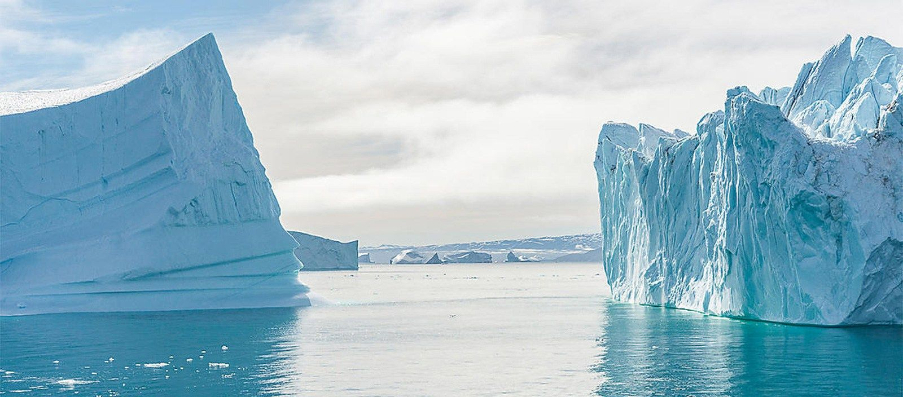
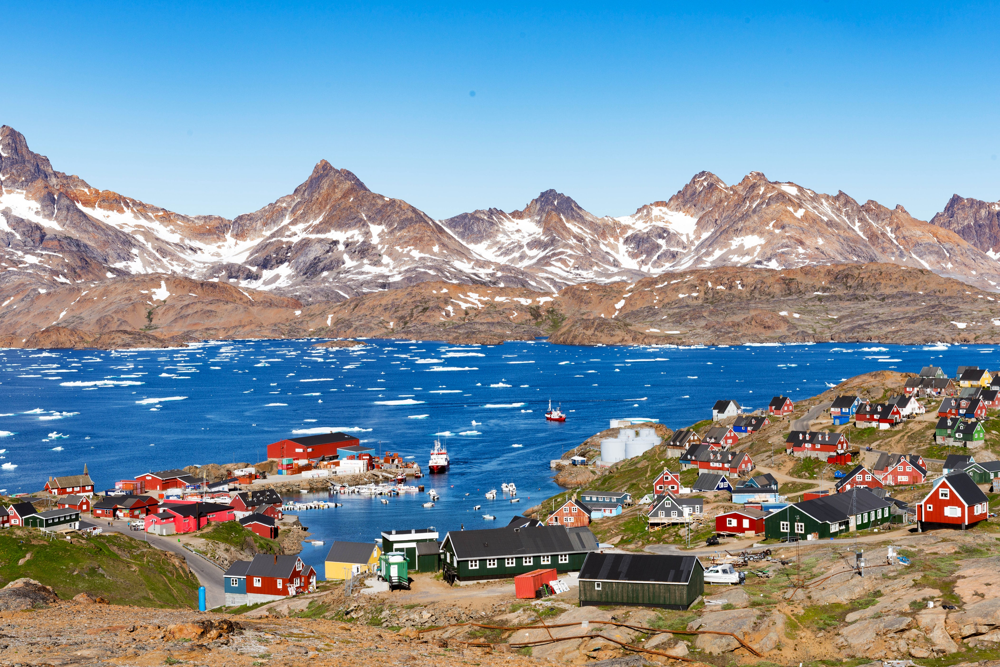

Greenland is anatural beauty. Greenland is known for its stunning natural landscapes, including glaciers, fjords, icebergs, and the Northern Lights. If you enjoy outdoor activities like hiking, kayaking, and skiing, Greenland offers plenty of opportunities to explore and appreciate nature. Greenland has a rich cultural heritage, with traditions and customs that have been passed down through generations of indigenous people. Visitors can learn about traditional hunting and fishing techniques, visit small towns and settlements, and experience the warm hospitality of the Greenlandic people hence its unique culture. Greenland is also the ideal place for those who seek an adrenaline rush. Greenland offers opportunities for extreme adventure, such as dog sledding, ice climbing, and even diving under the ice. These experiences can be both challenging and rewarding, and can create lifelong memories. Greenland is one of the most rapidly changing places on the planet due to climate change. Visiting Greenland can provide an opportunity to witness firsthand the effects of climate change on the environment and local communities, and to learn about efforts to mitigate its impacts.
Places I want to visit in Greenland! Where do you want to go first?
NORTHEAST GREENLAND NATIONAL PARK
Northeast Greenland National Park is the world's largest national park, covering over 375,000 square miles of pristine Arctic wilderness, and there are several reasons why one might want to visit it. Northeast Greenland National Park is a breathtakingly beautiful wilderness area, characterized by towering glaciers, ice caps, and rugged mountain ranges. The park is home to a diverse array of wildlife, including polar bears, Arctic foxes, and muskoxen, as well as numerous bird species.
Northeast Greenland National Park is an opportunity to embark on an unforgettable Arctic adventure. The park offers a range of activities, including hiking, camping, and wildlife watching, as well as more extreme activities such as dog sledding, ice climbing, and ski touring. Northeast Greenland National Park is also home to several Inuit communities, who have lived in the region for thousands of years. Visitors can learn about their culture, traditions, and way of life, including their unique relationship with the natural world.
Northeast Greenland National Park is an important area for scientific research, particularly in the fields of climate change and glaciology. Visitors can learn about ongoing research projects and participate in citizen science initiatives. Overall, visiting Northeast Greenland National Park is an opportunity to experience the beauty and majesty of one of the last remaining wilderness areas on the planet, while also learning about the culture and science of the Arctic. It is a must-visit destination for anyone interested in nature, adventure, and exploration.
ILULISSAT
Ilulissat is located on the edge of the Ilulissat Icefjord, a UNESCO World Heritage Site, which is home to the largest and most active glacier in the northern hemisphere. The icefjord is characterized by towering icebergs, majestic glaciers, and stunning natural beauty. Ilulissat offers a range of outdoor activities, including hiking, dog sledding, and boat tours, as well as more extreme activities such as glacier hiking and ice climbing. Visitors can experience the thrill of exploring one of the world's most spectacular natural wonders.
Ilulissat offers a range of outdoor activities, including hiking, dog sledding, and boat tours, as well as more extreme activities such as glacier hiking and ice climbing. Visitors can experience the thrill of exploring one of the world's most spectacular natural wonders. Ilulissat is also home to a range of Arctic wildlife, including whales, seals, and numerous bird species. Visitors can take boat tours to see these animals in their natural habitat, and there are also opportunities for fishing and hunting.
Ilulissat is located in the Arctic Circle, and it offers excellent opportunities to see the northern lights, one of the world's most spectacular natural phenomena. Overall, visiting Ilulissat is an opportunity to experience the beauty, culture, and adventure of one of the world's most remote and spectacular destinations. It is a must-visit destination for anyone interested in nature, adventure, and exploration.
TASIILAQ
Tasiilaq is located on the coast of the North Atlantic Ocean, and it is surrounded by stunning natural beauty, including towering mountains, glaciers, and fjords. The town is also home to a unique landscape of colorful houses and buildings, which add to its charm. Tasiilaq offers a range of outdoor activities, including hiking, kayaking, and boat tours, as well as more extreme activities such as glacier hiking and ice fishing. Visitors can experience the thrill of exploring one of the world's most spectacular natural wonders.
Tasiilaq is home to a vibrant Inuit community, who have lived in the region for thousands of years. Visitors can learn about their culture, traditions, and way of life, including their unique relationship with the natural world. Tasiilaq is also home to a range of Arctic wildlife, including whales, seals, and numerous bird species. Visitors can take boat tours to see these animals in their natural habitat, and there are also opportunities for fishing and hunting.
Tasiilaq is located in the Arctic Circle, and it offers excellent opportunities to see the northern lights, one of the world's most spectacular natural phenomena. Overall, visiting Tasiilaq is an opportunity to experience the beauty, culture, and adventure of one of the world's most remote and spectacular destinations. It is a must-visit destination for anyone interested in nature, adventure, and exploration, and for those who want to experience the unique culture of the Inuit people.